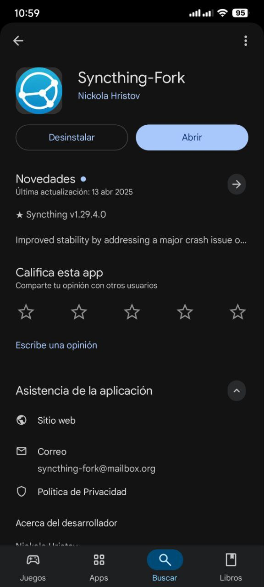

Syncthing
created 11-10-2025
release : 22-10-2025
topic : tecnología
Syncthing es una aplicación que ha sido fundamental tanto durante mi etapa universitaria como ahora en el trabajo. Me ha salvado en innumerables ocasiones al mantener mis archivos sincronizados de forma automática entre mis dispositivos.
Instalación
Dispositivos con Android
La aplicación la puedes encontrar en la Play Store con el nombre "Syncthing-Fork". Esta es una versión mejorada de la app oficial de Syncthing, la cual dejó de actualizarse con frecuencia.
Dispositivos con Windows y Macos
Link de descarga: Syncthing Oficial
Para la Instalación en windows, se tiene 2 opciones:
- Syncthing Windows Setup : Programa oficial de Syncthing y se ejecuta en el navegador, tú decides cuando tenerlo activo.
- SyncTrayzor v2 : Desarrollado por terceros, presenta una interfaz gráfica, el inicio es automático.
Personalmente recomiendo Syncthing Windows Setup.
Una vez instalado se ejecuta en el navegador en el siguiente enlace : http://127.0.0.1:8384/#>

Procedimiento de instalación
- En la aplicación móvil, dirigirse a la opción "Mostrar ID del dispositivo"
- Copiar ID del dispositivo
- En windows, aperturar el siguiente enlace http://127.0.0.1:8384/#>
- Opción : "+Añadir un dispositivo remoto"
- Pegar el ID del dispositivo
- Automáticamente llegará una notificación, clic en aceptar.
- Para sincronizar una carpeta, clic en "+agregar carpeta", configurar la ruta de la carpeta.
- En la opción compartiendo, agregar el dispositivo vinculado previamente.
- Automáticamente al dispositivo android, llegará la siguiente notificación.
- Al abrir, debemos seleccionar una carpeta compartiremos al igual que en windows; esta será la que se sincronizará automáticamente en ambos dispositivos.
- Una vez configurado todo, podemos comprobar la sincronización creando un archivo en una de las carpetas; este debería aparecer automáticamente en la carpeta correspondiente del otro dispositivo.


Consultas: huaccehuamaniisrael@gmail.com
— Israel@2025